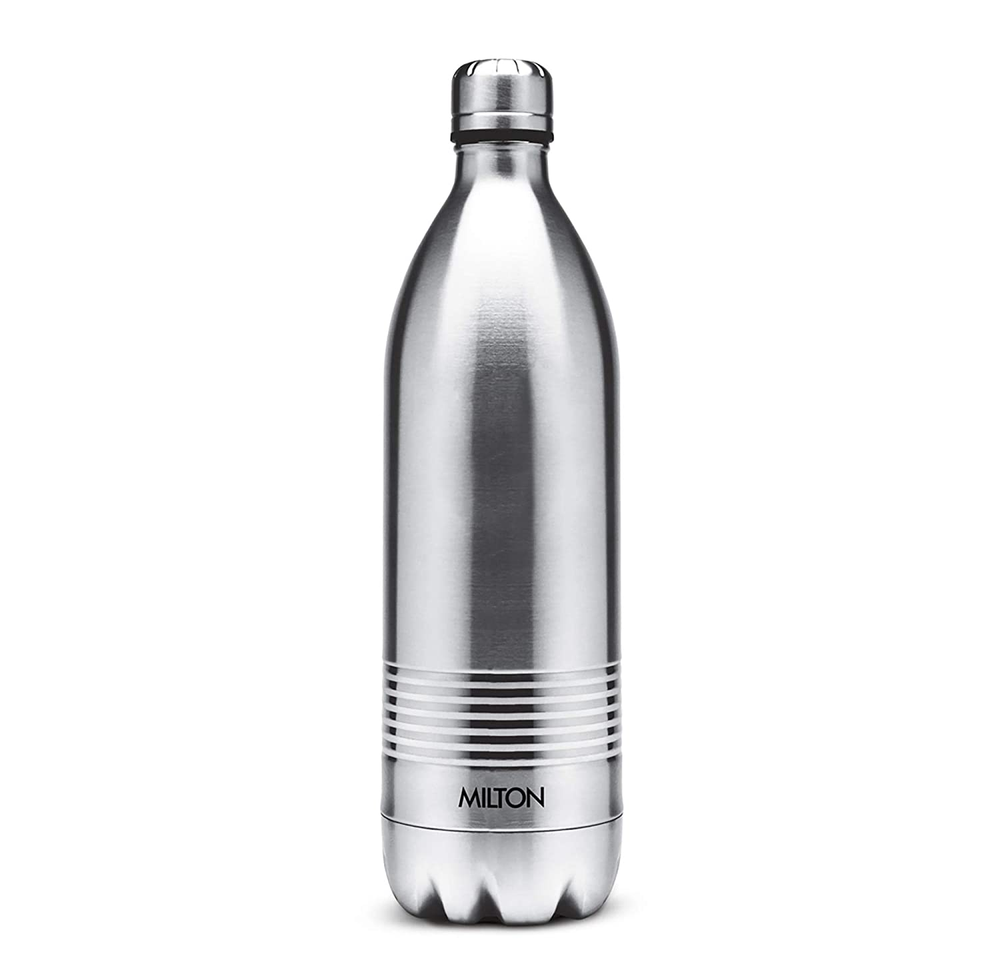

CASE STUDY

-
Phone

Output on Goolgle lens -
Phone
Output on Mobilenet Model -
Mobile Phone
Result - Both the models are accurate
It is a Draw
-
Bottle

Output on Goolgle lens -
Water Bottle
Output on Mobilenet Model -
Water Bottle
Result - Both the models are accurate
It is a Draw
4
-
Notebook
Output on Goolgle lens -
NoteBook
Output on Mobilenet Model -
Lighter
Result - Goolgle lens is more accurate than MobileNet Model
Goolgle Lens - 2, MobileNet model - 0
With This Case Study we proved that Google Lens Is more accurate than MobileNet Model.